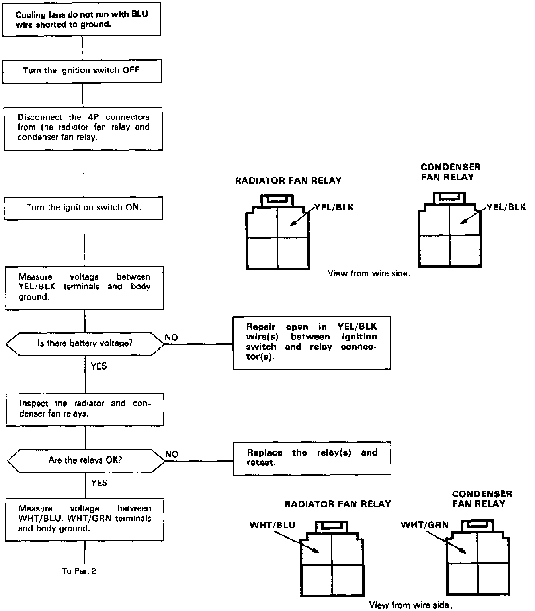
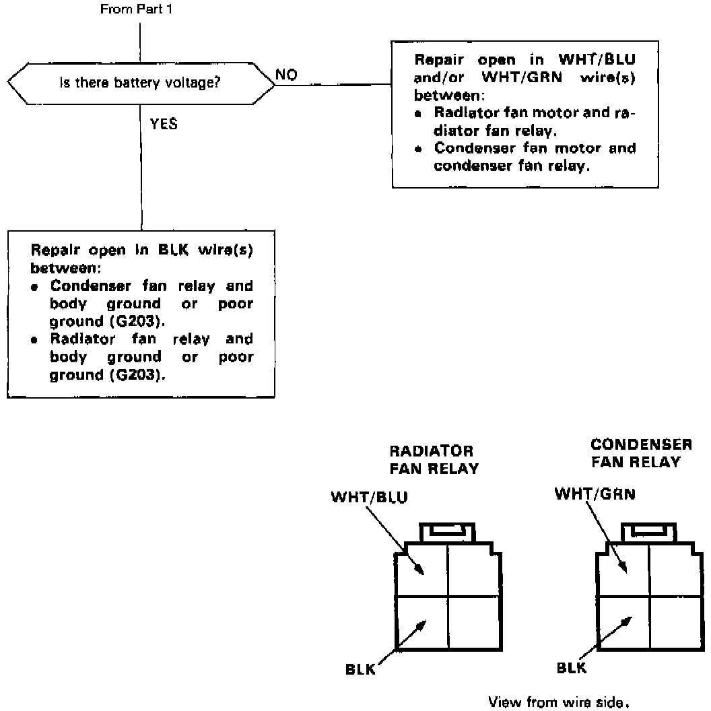

Flow Chart "B" - Cooling Fans
If one fan runs and the other doesn't, switch the relays. If the problem changes with the relays, replace the defective one. If the problem remains unchanged, start with step 1.NOTE: Use the digital multimeter (KS-AHM-32-003) to check.
Cooling Fans, Part 1 Of 2:

Cooling Fans, Part 2 Of 2:
